用得久了你会发现：你会拥有一个越来越懂你、有什么问题都可以跟它说的贴心助理。跟着下面步骤做，就能轻松拥有属于自己的个人助理。
第一步：下载并安装 Hermes
打开官网：https://hermes-agent.nousresearch.com/desktop
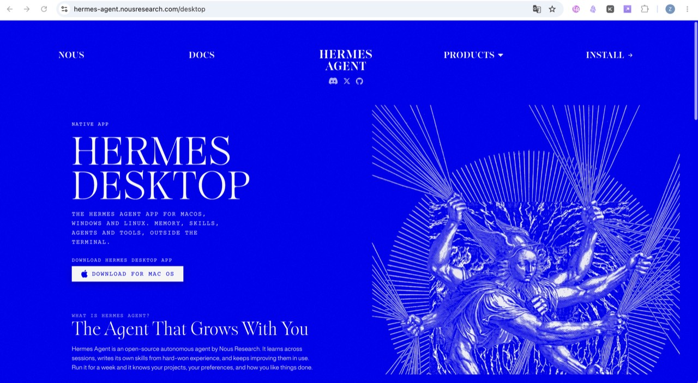
进入 Install（安装）板块，按你的电脑型号安装。
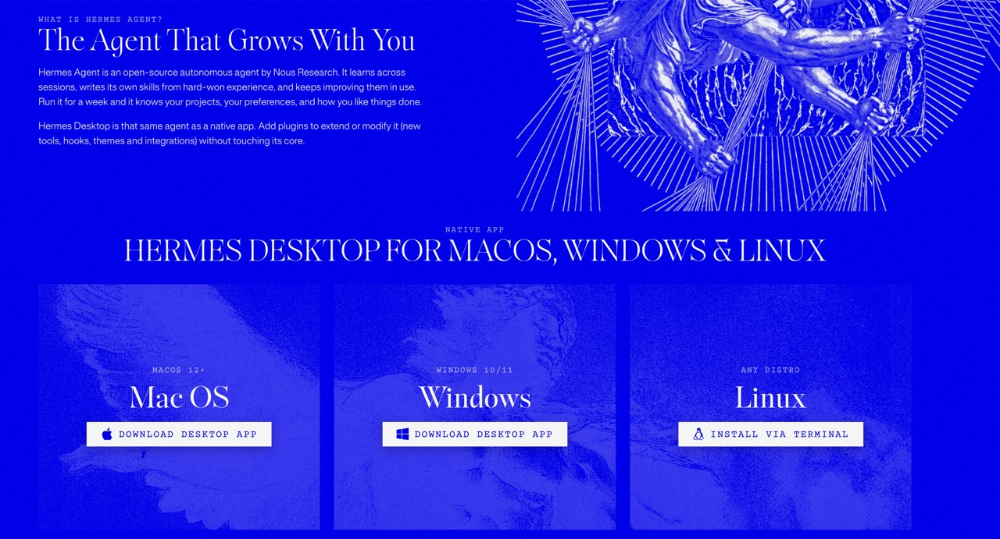
安装完成后，先到设置里把语言改为中文：
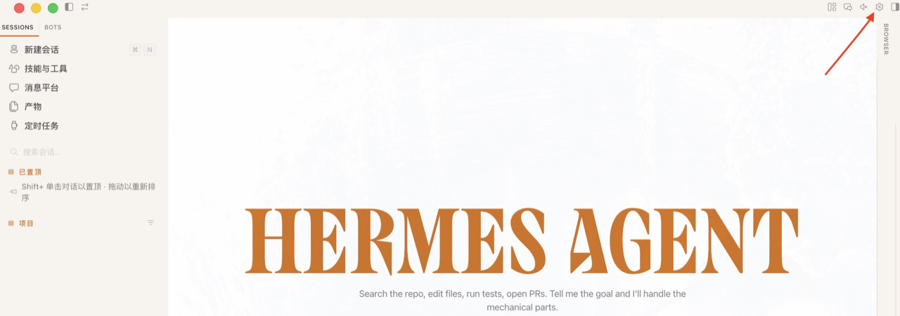
在 Appearance（外观）栏将语言改为中文，后面操作会轻松很多。
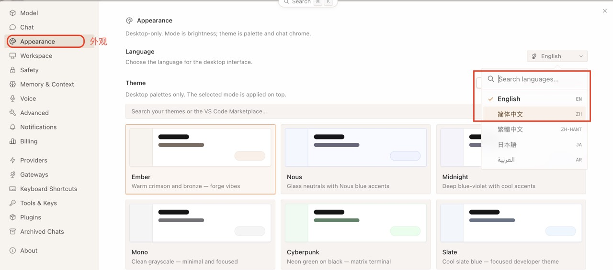
第二步：给 Hermes 配置模型（以 DeepSeek 为例）
点击右下角编辑模型：
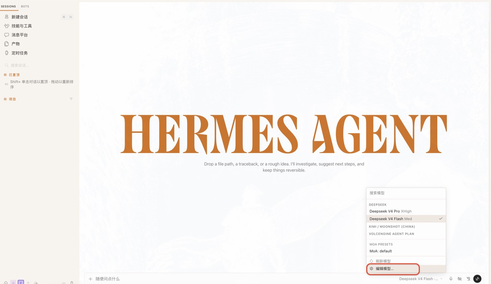
选择模型提供方，在列表里找到 DeepSeek：
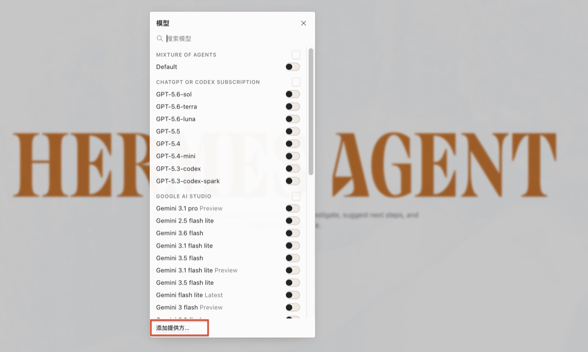
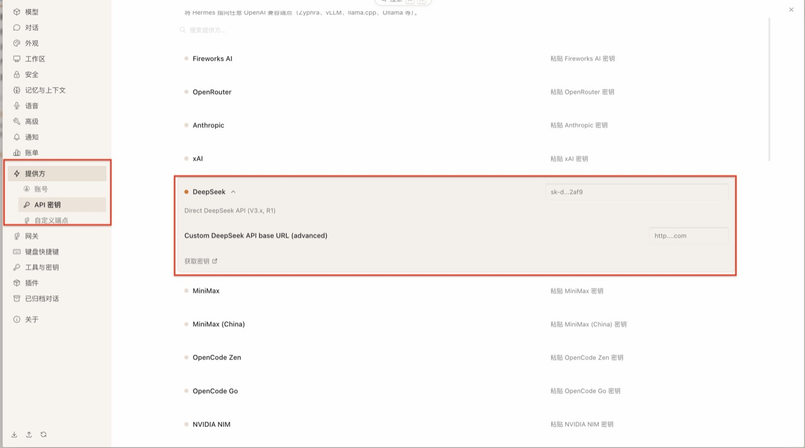
接着去 DeepSeek 官网创建 API Key：https://platform.deepseek.com/usage
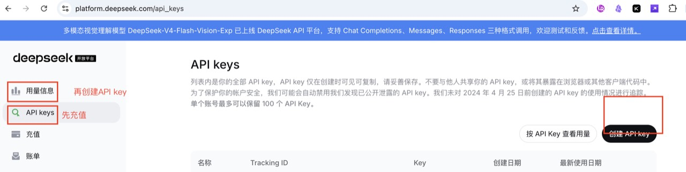
给 Key 取个名字，建议用 Agent 名称命名，方便以后在官网查看不同 Agent 的 Token 消耗。命名后点「创建」。
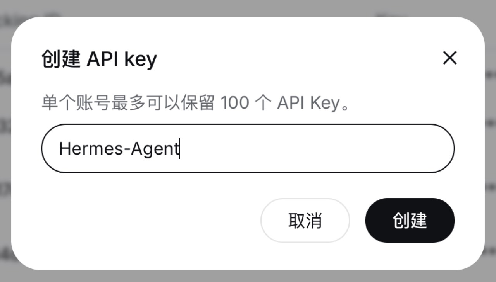
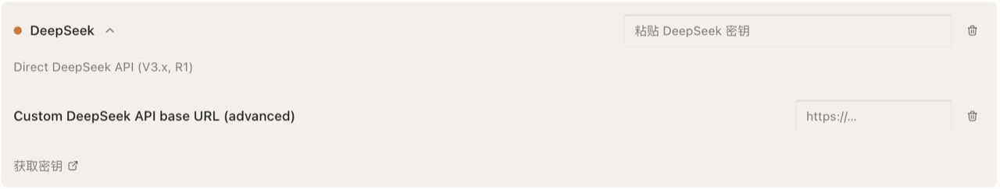
模型密钥配好后，Hermes 就可以正常用了。
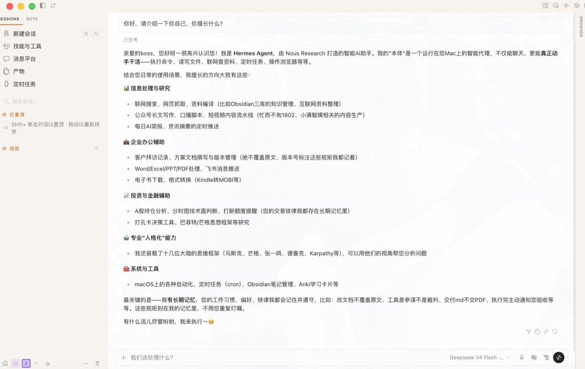
第三步：接入微信，做成随叫随到的助理
到这里你已经有一个会自生长、越来越懂你的智能体。若要随时随地使唤，需要把它接到手机——我选的是微信。
接下来要在电脑终端里配置。别怕终端：跟着做就行；卡住了也可以直接问 Hermes，它会帮你解决。
苹果电脑
1. 让 hermes 命令可用
打开终端，输入：
export PATH="$HOME/.hermes/hermes-agent/venv/bin:$PATH"（每次新开终端跑一次；想永久生效可写进 ~/.zshrc）
2. 新建档案
hermes profile create 你的名字 --clone你的名字：小写字母+数字，例如yang-boss、hermes3（不能用大写 / 中文 / 特殊符号）- --clone 很关键：自动复制模型配置、API key、Skills——新档案立刻能用
- 记忆（memories）不会克隆——新档案是空白记忆
3. 确认档案建好
hermes profile list应看到新名字出现在列表里，Gateway 显示 stopped。
4. 绑定微信（关键）
hermes --profile 你的名字 gateway setup- 菜单选 Weixin → 终端出现二维码（乱码就用提示的 URL 手机打开）
- 用准备好的新微信号扫码 → 手机点「确认登录」
- 看到
微信连接成功，account_id=xxx= 绑定完成
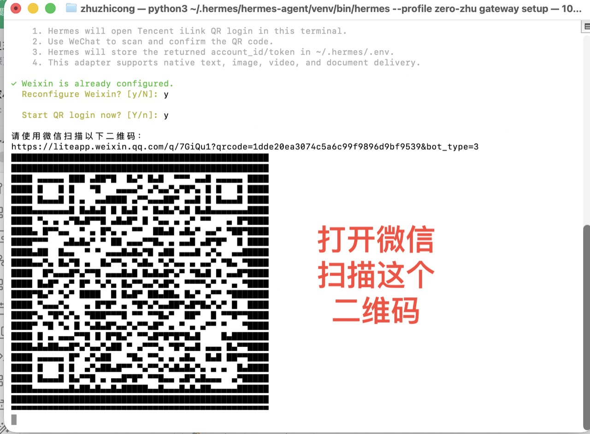
5. 启动网关测试
hermes --profile 你的名字 gateway run出现 weixin connected 后别关窗口，用新微信号给机器人发「你好」。收到回复 = 打通，再 Ctrl+C 停掉。
6. 转后台自启
hermes --profile 你的名字 gateway install
hermes --profile 你的名字 gateway start随时可查：
hermes gateway listWindows 电脑
准备：Windows 10/11、一个没用过的微信号、网络顺畅。
1. 打开 PowerShell
开始菜单搜索 PowerShell，或 Win + R 输入 powershell。
2. 粘贴安装命令
iex (irm https://hermes-agent.nousresearch.com/install.ps1)会自动装 Python、依赖等，几分钟跑完，默认装到 %LOCALAPPDATA%\hermes\。
3. 重开终端（关键）
关掉当前窗口，重新打开 PowerShell，新装的 hermes 命令才会生效。
4. 配置模型
hermes setup选常用服务商（如 DeepSeek）并粘贴 API key。若有 Nous Portal，可用 hermes setup --portal。
5. 连接微信机器人
hermes gateway setup选 Weixin → 扫码确认 → 看到连接成功即可。
6. 启动测试
hermes gateway run出现 weixin connected 后发「你好」验证，再 Ctrl+C。
7. 后台自启
hermes gateway install
hermes gateway start第四步：用 Obsidian 做本地记忆库
个人助理还需要存资料的地方。我选 Obsidian：本地知识库，资料留在自己电脑上。
打开官网下载：https://obsidian.md/
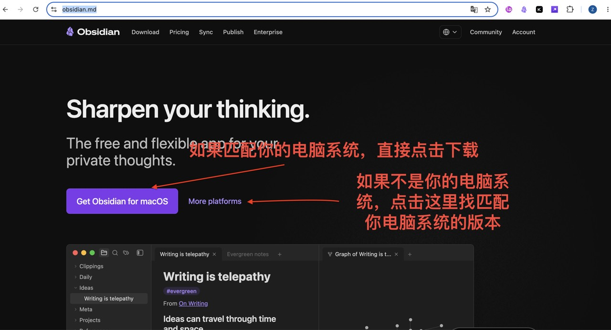
下载过程中，可先在电脑新建文件夹，例如「我的个人助理」。Windows 用户不要建在系统盘（如 C 盘）。
安装打开后，选择刚建的文件夹作为仓库：
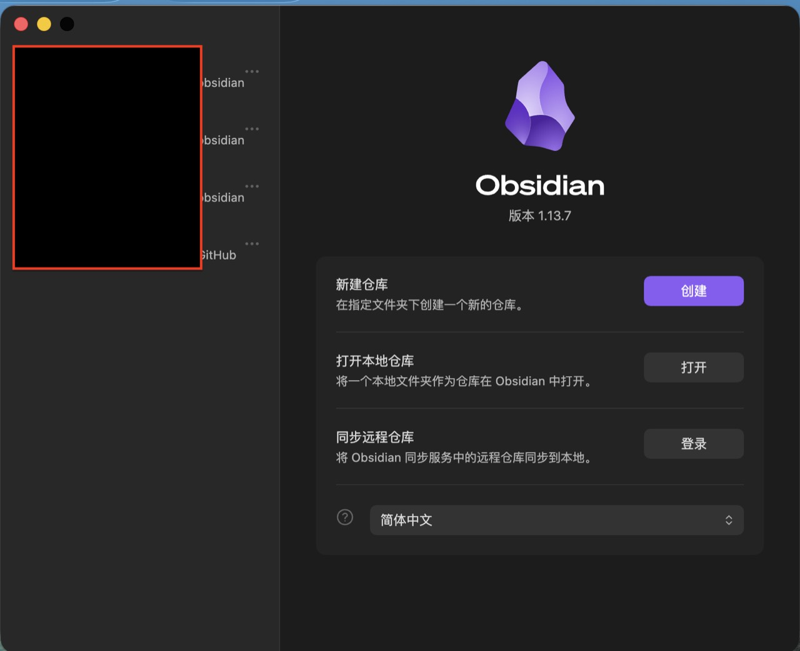
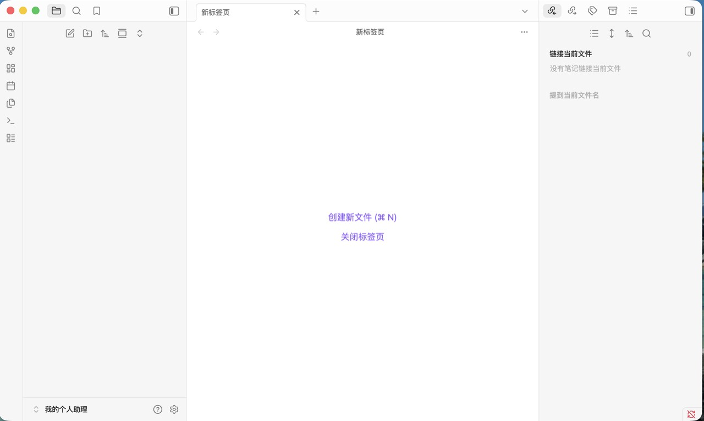
然后把文件夹位置告诉 Hermes，例如在微信端或电脑端说：
文件夹建在哪，就如实告诉 Hermes。之后信息都在本地；想查看时打开 Obsidian 即可。通过微信，你可以随时给 Hermes 发任务——去试试吧。